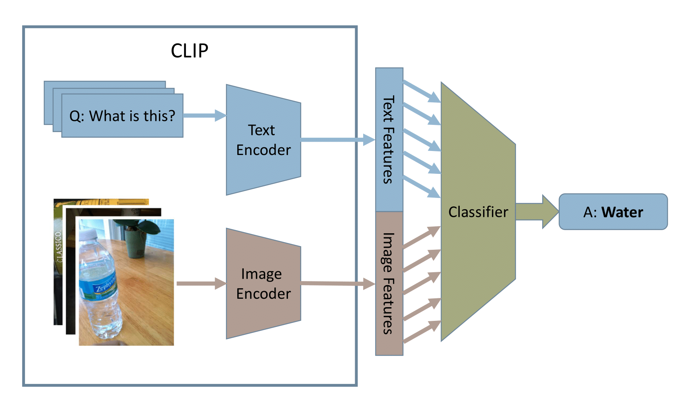
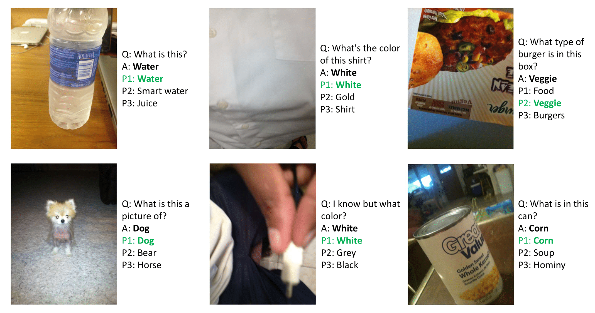

Be My Eyes: Visual Question Answering with CLIP
- Xinyuan Liu
- Xuan Yu
- Ziyang Wang
Department of Computer Science, Rice University
Abstract
This project proposes the development of an AI-based application, called Be my eyes, designed to assist visually impaired individuals in understanding images by answering questions about them. The proposed solution leverages the CLIP-Linear Visual Question Answering (VQA) Model, which integrates the Contrastive Language-Image Pre-training (CLIP) framework with a linear model for answer prediction. The model was trained and evaluated using the VizWiz-VQA dataset, demonstrating competitive performance with top-1 and top-3 accuracy metrics comparable to the leading participants in the VizWiz-VQA challenge, but with significantly lower computational requirements. The lightweight nature of this model facilitates deployment on portable devices, enhancing accessibility and independence for visually impaired users.
Model Overview
The CLIP+Linear model processes images and natural language questions, encoding them into high-dimensional features. A lightweight MLP classifier outputs the predicted answer, providing rapid and accurate responses for visually impaired users.
Table of Results
| Method | Top-1 Accuracy | Top-3 Accuracy |
|---|---|---|
| CLIP+Linear | 31.3% | 56.6% |
| CLIP+LSTM | 33.15% | 47.95% |
| Zero-shot CLIP | 0.00% | 0.04% |
| VILT | 25.2% | 38.2% |
| KTLO-top1 | - | 57.72% |
| UIO-top2 | - | 57.27% |
| Katya-top3 | - | 54.76% |
Table 1 shows the performance comparison of our CLIP+Linear model with other models, highlighting its competitive accuracy on the VizWiz-VQA dataset.
Sample Images and Predictions
This figure shows sample images, questions, ground truth answers, and the top-3 predictions made by the model, highlighting the model's ability to provide accurate results for various types of questions.